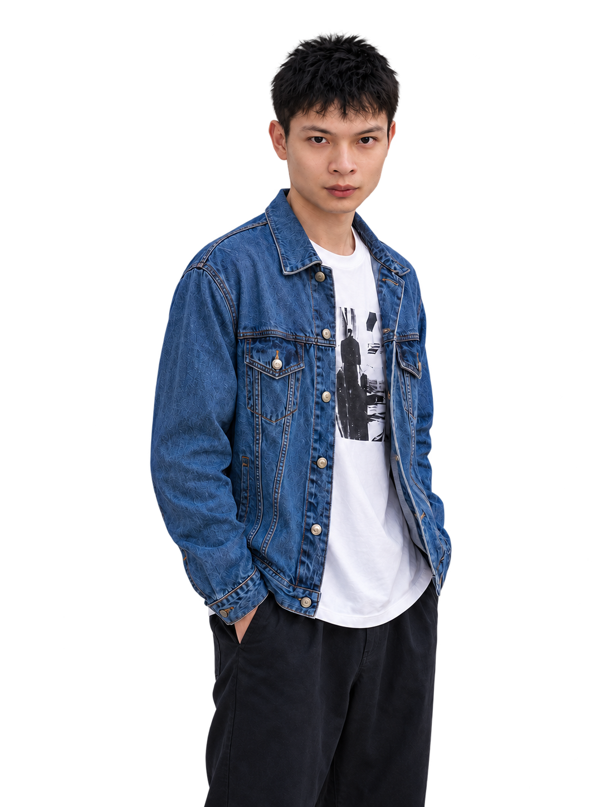

前腾讯视觉设计师，
现专注图像模型与 ComfyUI 工作流开发。

02 / 作品做过的东西，
做过的东西，
都在这里。
工具能用，画面能交付，模型能复现。
点卡片进案例或看大图。


有详情的进入案例PPT Agent 只放大界面
{01}
金证股份 · 品牌 IP
商业 IP / 形象与延展
{02}
抖音 · 视觉 KV
时空阅读计划 / 商业主视觉
{03}
iQOO 视觉分镜
商业 KV / 分镜协作
{04}
阿拉德热映季
活动视觉 / 插画设计
商业画面 · 2023 前后点开看完整图，不另开项目页
{01}
胖滴熊 IP 模型
SDXL / 个人 IP 风格训练
{02}
企鹅 IP 模型
SDXL / 角色风格训练
{03}
PVC 风格 LoRA
定制 LoRA / 风格表现
{04}
红山主题人像模型
主题 LoRA / 人像场景融合
风格是否按要求出现点开看大图，不另开项目页